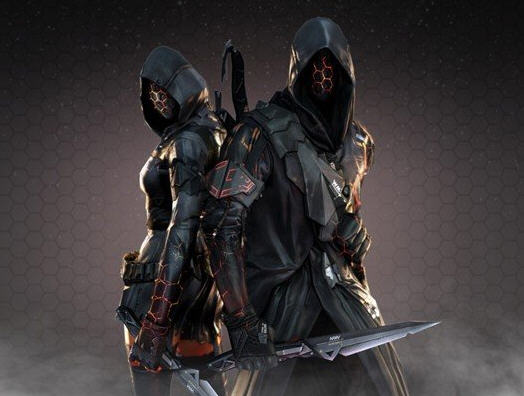

1.暗影模式：穿越火线在2013年6月推出的一款新的游戏模式。它相比较于我们所熟知的幽灵模式还是有一定的差别的。下面我来给大家介绍一下它的玩法。 |
 |
2.暗影模式玩法介绍：暗影模式对战双方分别为影武者和佣兵，影武者处于隐身状态，且移动速度较快，只能使用近战武器;佣兵可使用任意武器，通过声音和场景内的道具来搜索消灭影武者。 |
|
3.暗影模式分为2种玩法：感染玩法和歼灭玩法。 |
|
4.感染玩法：玩家在该玩法下的首要目标为击杀敌方玩家。被对方玩家击杀后，玩家将会变成敌方阵营玩家复活。当某一阵营玩家全部阵亡时，敌对阵营获胜;当小局时间结束时，人数较多的一方获胜，如果双方人数相同，则为平局。(相比于阵营胜利，玩家的杀敌数更为关键。) |
|
5.歼灭玩法：玩家在该玩法下的首要目标为击杀敌方玩家。玩家在被击杀后不可复活。当某一阵营玩家全部阵亡时，敌对阵营获胜;当小局时间结束时，人数较多的一方获胜，如果双方人数相同，则为平局。(相对于玩家的杀人数，本方阵营的胜利更加关键) |